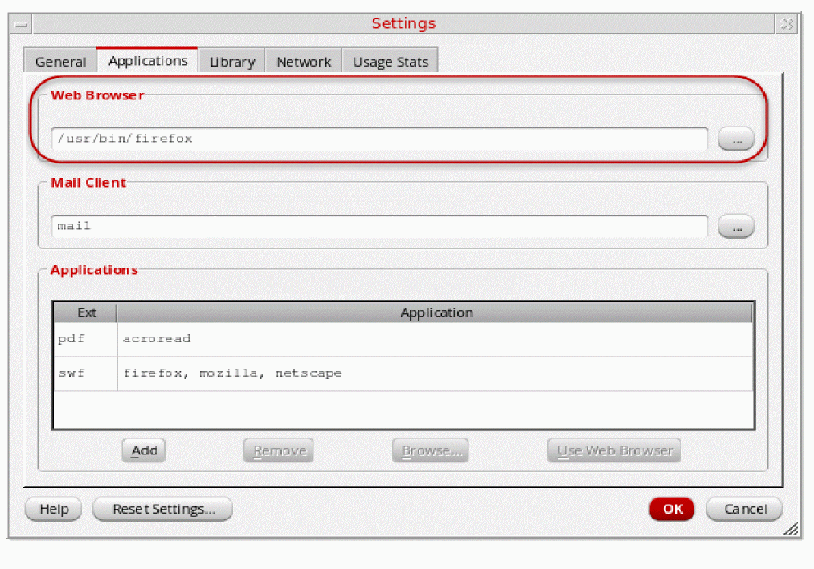

Preface
This document lists the following videos that are accessible from Cadence Help.
- Videos included in the Virtuoso installation
- Recommended videos available on Cadence Online Support
View these videos in conjunction with the relevant user guide.
This preface contains the following topics:
- Scope
- Playing Videos from Cadence Help
- Additional Learning Resources
- Customer Support
- Feedback about Documentation
Scope
Unless otherwise noted, the functionality described in this guide can be used in both mature node (for example, IC6.1.8) and advanced node and methodologies (for example, ICADVM18.1) release.
For IC6.1.8 Only Books The functionality described in this guide can be used only in mature nodes, such as IC61.8. For ICADVM18.1 Only Books The functionality described in this guide can be used only in ICADVM18.1 advanced nodes and advanced methodologies releases.Playing Videos from Cadence Help
Cadence Help includes videos that demonstrate how various tasks are performed in Virtuoso. These videos are listed in the section “Videos Available with Virtuoso”.
This document also highlights other recommended videos available in the
Playing Videos on the Linux Platform
You can play a video available with Virtuoso in the Cadence Help window. To see the full-screen view of the video, click the expand button on the video control panel. To access the control panel when the video is playing in expanded mode, press Esc and then use this panel in the Cadence Help window.
You can choose to play a video available with Virtuoso in an external web browser, outside Cadence Help. See “Setting Cadence Help to Play Videos in an External Web Browser”.
Playing Videos on the IBM AIX Platform
On the IBM AIX platform, Cadence Help launches a new browser window to play a video available with Virtuoso. You can set the default web browser to play videos from Cadence Help. See “Setting the Default Web Browser”.
Setting Cadence Help for Videos
Setting the Default Web Browser
To set the web browser to play videos:
- Choose Edit — Settings in Cadence Help. The Settings form displays.
-
Click the Applications tab.
 -
Specify the video extension and the web browser path where the video with that extension must play.
The web browser you specify must have the required plugin to play videos. For details about this plugin, check the support portal of your browser. - Click OK.
Setting Cadence Help to Play Videos in an External Web Browser
To set Cadence Help to play videos available with Virtuoso in an external browser instead of Cadence Help:
- Choose Edit — Settings in Cadence Help. The Settings form displays.
-
Click the General tab.
- Enable the option Play Videos in External Web Browser.
- Click OK.
Additional Learning Resources
Video Library
The
To view a list of videos related to a specific product, you can use the Filter Results feature available in the pane on the left. For example, click the Virtuoso Layout Suite product link to view a list of videos available for the product.
You can also save your product preferences in the Product Selection form, which opens when you click the Edit icon located next to My Products.
Rapid Adoption Kits
Cadence provides a number of
To explore the full range of training courses provided by Cadence in your region, visit
Help and Support Facilities
Virtuoso offers several built-in features to let you access help and support directly from the software.
- The Virtuoso Help menu provides consistent help system access across Virtuoso tools and applications. The standard Virtuoso Help menu lets you access the most useful help and support resources from the Cadence support and corporate websites directly from the CIW or any Virtuoso application.
-
The Virtuoso Welcome Page is a self-help launch pad offering access to a host of useful knowledge resources, including quick links to content available within the Virtuoso installation as well as to other popular online content.
The Welcome Page is displayed by default when you open Cadence Help in standalone mode from a Virtuoso installation. You can also access it at any time by selecting Help – Virtuoso Documentation Library from any application window, or by clicking the Home button on the Cadence Help toolbar (provided you have not set a custom home page).
For more information, see
Customer Support
For assistance with Cadence products:
-
Contact Cadence Customer Support
Cadence is committed to keeping your design teams productive by providing answers to technical questions and to any queries about the latest software updates and training needs. For more information, visit https://www.cadence.com/support. -
Log on to Cadence Online Support
Customers with a maintenance contract with Cadence can obtain the latest information about various tools at https://support.cadence.com.
Feedback about Documentation
You can contact Cadence Customer Support to open a service request if you:
- Find erroneous information in a product manual
- Cannot find in a product manual the information you are looking for
- Face an issue while accessing documentation by using Cadence Help
You can also submit feedback by using the following methods:
- In the Cadence Help window, click the Feedback button and follow instructions.
- On the Cadence Online Support Product Manuals page, select the required product and submit your feedback by using the Provide Feedback box.
Return to top